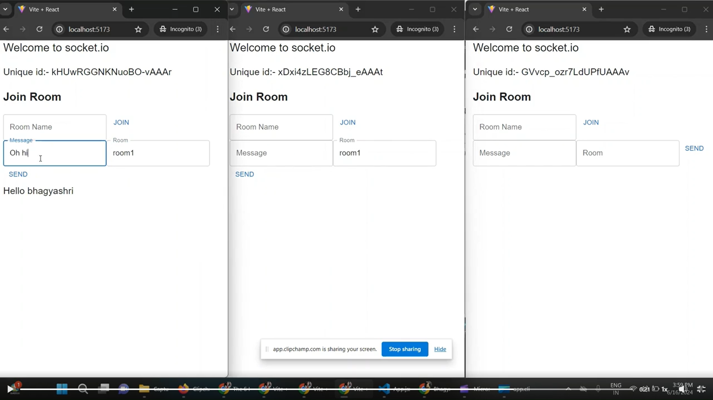

<div class=" mx-auto p-5 sm:p-10 md:p-16 bg-gradient-to-r bg-[#0e0220]">
    <div class="grid grid-cols-1 md:grid-cols-3 sm:grid-cols-2 gap-10">
        <div class="rounded-lg shadow-[-20px_-10px_30px_1px_#2D3748] bg-white max-w-sm">
            <a>
                
            </a>
            <div class="p-6">
                <h5 class="text-gray-900 text-xl font-medium mb-2">Mini Chat web page</h5>
                <p class="text-gray-700 text-base mb-4">
                    I built a mini chat app 📱 using Socket.IO 🔄 for real-time communication and React ⚛️ for the frontend. The backend is powered by Node.js 🌐 and Express 🚀, ensuring efficient and scalable performance! 🎉<a
                        href="https://www.linkedin.com/posts/bhagyashritamrakar_webdevelopment-socketio-nodejs-activity-7208055470685593601-EImb/?utm_source=share&utm_medium=member_desktop" target="_blank"
                        class="font-bold text-blue-500">Demo</a>
                </p>
                <button type="button"
                    class="inline-block px-6 py-2.5 bg-blue-600 text-white font-medium text-xs leading-tight uppercase rounded shadow-md hover:bg-blue-700 hover:shadow-lg focus:bg-blue-700 focus:shadow-lg focus:outline-none focus:ring-0 active:bg-blue-800 active:shadow-lg transition duration-150 ease-in-out">
                    <a href="https://github.com/BST82/Node-React-Socket-io-mini-Chat-web-page/tree/main" target="_blank">Click</a></button>
            </div>
        </div>

        <div class="rounded-lg  bg-white max-w-sm shadow-[-20px_-10px_30px_1px_#2D3748] ">
            <a href="#!">
                <video width="320" height="240" controls class="w-full rounded-t-lg">
                    <source src="../../../assets/images/backend/chat.mp4" type="video/mp4">
                    <source src="movie.ogg" type="video/ogg">
                    Your browser does not support the video tag.
                </video>
            </a>
            <div class="p-6">
                <h5 class="text-gray-900 text-xl font-medium mb-2">Websocket live chat </h5>
                <p class="text-gray-700 text-base mb-4">
                    WebSocket ensures instant message delivery with full-duplex communication over a single TCP connection. ⚡ Socket.io enhances this by adding reliability and cross-browser support, simplifying event and message handling. 🌐
                    <a
                        href="https://www.linkedin.com/feed/update/urn:li:activity:7228388411068317696/" target="_blank"
                        class="font-bold text-blue-500">Demo</a>
                </p>
                <button type="button" class=" inline-block px-6 py-2.5 bg-blue-600 text-white font-medium text-xs leading-tight uppercase rounded shadow-md hover:bg-blue-700 hover:shadow-lg focus:bg-blue-700 focus:shadow-lg focus:outline-none focus:ring-0 active:bg-blue-800 active:shadow-lg transition duration-150 ease-in-out">
                    <a href="https://github.com/BST82/Node-Websocket-Socket.io-chat-application" target="_blank">Click</a>
                </button>
            </div>
        </div>
    
    </div>
</div>